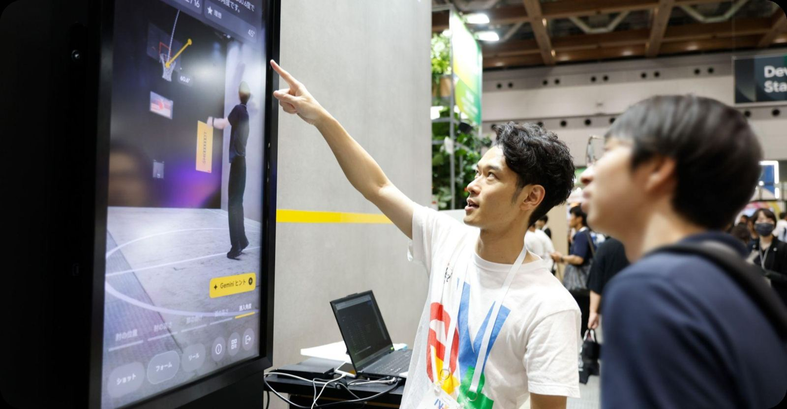

Conferences · AI
Google Cloud Next Tokyo 27
- Dates
- –
- Venue
- Tokyo Big Sight (West Halls 1-3)
- Location
- Tokyo, Japan
- Format
- In-person
- Category
- AI
- Industry
- Cloud / AI
- Organiser
- Google Cloud Japan
- Official website
- https://www.googlecloudevents.com/next-tokyo/
About
Dates are local to the host city (Japan Standard Time, UTC+9).
Topics: Google Cloud, generative AI, AI agents, data.
No organiser attendance figure found on the official pages fetched 24 Nov 2026. Ranked by our estimated size tier 'medium' (10,000-30,000 attendees/visits), a judgement from format, venue and scale, not an official number.
Sources
- Official — https://www.googlecloudevents.com/next-tokyo/
Hotels
- Bvlgari Hotel Tokyo — Forbes 5-Star · Tokyo Midtown Yaesu, 104-0028 Tokyo · 5.8 km from the venue · Price on request
- Mandarin Oriental, Tokyo — Forbes 5-Star · Chuo-dori Avenue, 103-0022 Tokyo · 6.5 km from the venue · Price on request
- Palace Hotel Tokyo — Forbes 5-Star · Uchibori Street, 100-0005 Tokyo · 6.7 km from the venue · Price on request
- The Capitol Hotel Tokyu — Forbes 5-Star · 10 3, 100-0014 Tokyo · 7.0 km from the venue · Price on request
- The Okura Tokyo — Forbes 5-Star · 4 10, 105-0001 Tokyo · 6.2 km from the venue · Price on request
- The Peninsula Tokyo — Forbes 5-Star · 1 8, 100-0006 Tokyo · 5.8 km from the venue · Price on request
- Conrad Tokyo — Forbes 4-Star · 105-7337 Tokyo · 4.8 km from the venue · Price on request
- Imperial Hotel, Tokyo — Forbes 4-Star · 1 1, 100-8558 Tokyo · 5.7 km from the venue · Price on request · Venue page
- The Prince Park Tower Tokyo — Forbes 4-Star · Circular Route 3, 105-0011 Tokyo · 5.3 km from the venue · Price on request
- The Prince Sakura Tower Tokyo, Autograph Collection — Forbes 4-Star · Sakura-Zaka St., 108-8612 Tokyo · 5.6 km from the venue · Price on request
Venue
- Tokyo Big Sight (Tokyo International Exhibition Center) — Convention centre · 3-11-1 Ariake, Koto-ku, Tokyo, Japan · 1,000 capacity